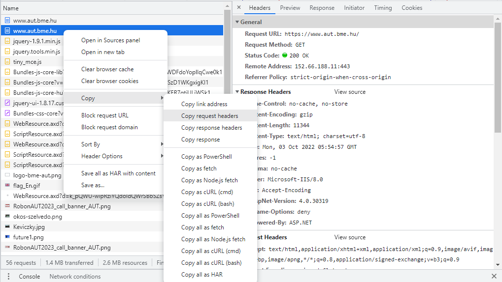

A labor során laborvezetői segítséggel, majd önállóan készítesz el feladatokat a webes technológiák gyakorlati megismerése érdekében.
A labor célja, a böngésző fejlesztői eszközeinek (dev toolbar) megismerése, a HTTP kérések és válaszok vizsgálata, valamint HTML oldalak készítésének gyakorlása.
Moodle-ben keresd meg a laborhoz tartozó meghívó URL-jét és annak segítségével hozd létre a saját repository-dat.
Várd meg, míg elkészül a repository, majd checkout-old ki.
Egyetemi laborokban, ha a checkout során nem kér a rendszer felhasználónevet és jelszót, és nem sikerül a checkout, akkor valószínűleg a gépen korábban megjegyzett felhasználónévvel próbálkozott a rendszer. Először töröld ki a mentett belépési adatokat (lásd itt), és próbáld újra.
Hozz létre egy új ágat megoldas néven, és ezen az ágon dolgozz.
A neptun.txt fájlba írd bele a Neptun kódodat. A fájlban semmi más ne szerepeljen, csak egyetlen sorban a Neptun kód 6 karaktere.
Weboldalak készítésekor szükség lehet a HTTP forgalom megvizsgálására, viszont az esetek jelentős részében elegendő lehet, ha a böngésző forgalmát meg tudjuk vizsgálni. A mai böngészők mindegyike tartalmaz eszközöket, amellyel a weboldalak hibakeresése nagyon egyszerűen kezelhetővé válik.
Nyissuk meg a laborvezető által kijelölt böngészőben a https://www.bme.hu oldalt, majd nyissuk meg a Developer tools nézetét az F12 billentyűvel.
Vizsgáljuk meg, mit kínálnak az egyes böngészőkbe épített hibakereső eszközök!
A Chrome, Edge és Firefox böngészők eszközkészlete kisebb eltérésektől eltekintve megegyezik, a leggyakoribb funkciók az alábbiak:
A dokkolás módja megadható: az ablak alsó részére vagy oldalára is (Chrome, Firefox) dokkolható az eszköztár, ill. kivehető a saját ablakába.
DOM vizsgálata (DOM Explorer, Elements, Inspector): a dokumentumfa felépítését tudjuk megvizsgálni, látható a kirajzolt HTML tartalom. Lehetőségünk van szerkeszteni az elemeket, beszúrni attribútumokat, elemeket, törölni őket. Kiválasztható egy DOM elem egérrel a kirajzolt oldalon vagy a szöveges megjelenítőben is. Egy elemet kiválasztva jobb oldalon az elemre illeszkedő stíluslap-szabályok (CSS) láthatók, ezek is szerkeszthetők. CSS készítésekor egy nagyon hasznos eszköz.
JavaScript konzol (Console): a JavaScript standard outputja a konzol, az alkalmazások által írt tartalmak itt láthatók. Lehetőségünk van kód futtatására is a konzol ablakban, ami azonnal kiértékelődik.
Források (Sources): Itt látható, hogy a teljes weboldal betöltéséhez honnan és mit töltött le a böngésző. Ha itt kiválasztunk egy JS fájlt, akkor annak a teljes kódját láthatjuk, sőt töréspontokat is tehetünk bele, így lehetővé téve a JS fájlok debuggolását.
Hálózat (Network): itt láthatjuk a kimenő kéréseket és a rájuk érkező válaszokat. Előnye, hogy csak a konkrét oldalhoz tartozik, nem a teljes böngészőhöz, így könnyebb leszűrnünk, melyik kérések tartoznak melyik alkalmazáshoz/oldalhoz. Láthatók a pontos időzítések is, HTTP kérések indítását viszont nem lehetséges kézzel megejtenünk a beépített lehetőségekkel.
Teljesítménymérők (Performance): különböző teljesítménymérő eszközök állnak rendelkezésünkre a weboldalak elemzéséhez, amik jellemzően a memória- és processzorhasználatot mérik.
Alkalmazás (Application): az alkalmazás által a különböző tárolókban - Local Storage, Session Storage, Cookies, ... - tárolt kulcs-érték párokat tudjuk megtekinteni.
Az eszközök legalább alapszintű ismerete (elsősorban a DOM Explorer, Console és Network használata) a laborokon elengedhetetlen.
A hálózati kéréseket csak akkor rögzíti a Network fül, ha a Dev Toolbart korábban nyitjuk meg, minthogy az oldalt betöltenénk.
Az alábbi ábrán látható, hogy milyen funkciókat és beállításokat rejt a hálózat fül.
Disable cache: bekapcsolása nagyon fontos JS és HTML kód debuggolása során, ugyanis a böngészők elég agresszívan gyorsítotárazzák ezeket a kéréseket. Fontos azonban tudni, hogy a gyorsítótár csak addig van letiltva amíg a Dev Toolban meg van nyitva és csak arra az egy oldalra (fülre) vonatkozik.
Preserve log: bekapcsolásával lehetőségünk van a logok megőrzésére navigációkor is. Azonban ezt a pipát óvatosan használjuk, mert a sok log nagyon be tudja lassítani a böngészőt.
Response Headers: Itt találjuk a HTTP válasz fejléceit. Alapértelmezés szerint egy feldolgozott formában látjuk az adatokat, viszont a View Source gombra kattintva meg tudjuk nézni a nyers adatokat is.
Request Headers: Itt találjuk a HTTP kérés fejléc mezőit. Alapértelmezés szerint egy feldolgozott formában látjuk az adatokat, viszont a View Source gombra kattintva meg tudjuk nézni a nyers adatokat is.
Hogyan másoljuk ki egy kéréshez tartozó fejléc adatokat
A kérésen kattints jobb egérgombbal majd ott válaszd a Copy menüpontból, hogy mit szeretnénk másolni.
HTTP kérés-válaszok fejlécek másolása
Nézzük meg, hogy milyen HTTP kérés ment ki az oldal letöltéséhez.
GET/HTTP/1.1Accept:text/html,application/xhtml+xml,application/xml;q=0.9,image/avif,image/webp,image/apng,*/*;q=0.8,application/signed-exchange;v=b3;q=0.9Accept-Encoding:gzip, deflate, brAccept-Language:hu-HU,hu;q=0.9,en-US;q=0.8,en;q=0.7Host:www.aut.bme.huUser-Agent:Mozilla/5.0 (Windows NT 10.0; Win64; x64) AppleWebKit/537.36 (KHTML, like Gecko) Chrome/106.0.0.0 Safari/537.36
Nézzük meg a kérésre kapott választ.
HTTP/1.1200OKCache-Control:no-cache, no-storePragma:no-cacheContent-Type:text/html; charset=utf-8Content-Encoding:gzipExpires:-1Vary:Accept-EncodingServer:Microsoft-IIS/8.0X-AspNet-Version:4.0.30319X-Powered-By:ASP.NETX-Frame-Options:denyDate:Mon, 03 Oct 2022 05:54:57 GMTContent-Length:11344
Info
Ha még nem tetted volna meg, nyisd meg a GitHub Classroom leklónozott beadandójának repositoryját, aminek gyökér könyvtárát nyisd meg a VS Code szerkesztőben! A index.html fájlban dolgozzunk és a megoldas ágra pusholjunk.
Postman segítségével egyszerűen tudunk HTTP kéréseket indítani és a kapott válaszokat vizsgálni.
Leggyakrabban akkor használjuk ha egy REST API-t kell kipróbálni vagy tesztelni.
A labor gépekre az asztali verzió fel van telepítve, így azt fogjuk használni.
Ahhoz, hogy ne kelljen szerver oldali kódot készíteni egy tesztelésre kiadott REST API-t használunk melynek leírása a https://petstore.swagger.io/ oldalon érhető el. A legfontosabb végpontok az alábbi swagger ábrán is látható.
Állítsunk össze egy új kérést, ami egy kutyát hoz létre. Ehhez a /pet URL-re kell egy POST kérést küldeni a Body -ban megadva azt a JSON-t amivel létre kell hozni a kutyát. A pontos leírás a swagger oldalon érhető el.
A HTML (HyperText Markup Language) a web nyelve. A böngészők elsősorban HTTP-n keresztül eljuttatott HTML tartalom kirajzolásáért és feldolgozásáért felelősek.
A HTML egy XML-szerű nyelv, amelyben elemek (tag) írják le a dokumentumunkat. Az egyes elemeknek lehetnek tulajdonságai, amiket attribútumoknak (attribute) nevezünk. Az attribútum értéke leggyakrabban szám, szöveg, korlátozott értékkészletű szöveg (enumeráció), ritkábban felsorolás vagy objektum lehet. A HTML-ben bizonyos szabályrendszernek kell eleget tennünk: megkötések vonatkoznak arra, hogy milyen jellegű elemeket milyen más elemekben helyezhetünk el.
A kód könnyen értelmezhető, az egyes elemek nyitó és záró tag-je között találhatók a hozzárendelt gyerekelemek. A whitespace-ek, behúzások csak az olvashatóságot segítik.
Fontos
A HTML-ben vétett esetleges hibák csendes hibák, az esetleges hibás elhelyezések vagy helytelen formázás/szintaxis következtében a böngésző meg fogja jeleníteni az oldalt, amennyire a HTML alapján azt meg tudja tenni. Egy lemaradt </lezáró tag> pl. nem minden esetben rontja el a HTML oldal kinézetét, de okozhat nemkívánatos mellékhatásokat.
Mielőtt belevágnánk a feladatba érdemes feleleveníteni a szemantikus HTML tageket, amit a div-ek helyett használunk a kódban, ezzel jelölve a nagyobb logikai egységeket.
Nyisd meg az index.html fájlt és jobb gombbal kattints bele, majd választ az Open with Live Server opciót. Ezzel elindul egy fejlesztő webszerver a 5500-as porton és az alapértelmezett böngészőt is megnyitja a kiválasztott oldal tartalmával. (http://127.0.0.1:5500/index.html)
Tip
Ez az opció csak könyvtárakra működik, tehát ha csak simán a fájlt nyitod meg (nem a projekt könyvtárát) akkor nem fog működni.
Egyszerű HTML elemek áttekintése
A kiinduló kódban már megtalálható ez a részlet így csak a viselkedésüket kell megvizsgálni. Láthatjuk, hogy egy-egy elemnek van egy alapértelmezett kinézete, amit a böngésző definiál. A későbbiekben ezt a Dev Toolbar segítségével közelebbről is megnézzük.
div - blokk elem (új sorban kezdődik)
span - inline elem (nem kezd új sort)
p - bekezdés
b vagystrong vagy em - kiemelt szöveg
i - dőlt betűs
br - sortörés
A következő pontokban az index.html oldalban található TODO elemek helyére készítsd el a szükséges HTML kódrészletet.
Fejléc
A megfelelő szemantikus HTML taget használd.
A megfelelő heading-ben jelenítsd meg a "Mobil- és Webes szoftverek fejlesztése" szöveget.
Navigációs linkek
A megfelelő szemantikus HTML taget használd.
Az alábbi két linket hozd létre
Főoldal az az index.html-re mutat
Form ami a form.html-re mutat.
Segítség
a - hyperlink készítése a nyitó és záró tag közé kerül a megjelenített szöveg.
href - az a tag attribútuma, hova kell navigálni.
target - az a tag attribútuma, hol nyissa meg a linket (új tab, vagy ebben az ablakban).
Fő tartalmi blokk
Az alább felsorolt blokkokat kell létrehozni. Minden blokk előtt legyen egy megfelelő heading és alatta a szükséges kódrészlet.
Felsorolások
Egy heading-ben jelezd, hogy ez a rész a "Felsorolások", majd készíts egy bullet pointos listát és egy sorszámozott listát 2-2 elemmel.
Segítség
ul - bullet pointos felsorolás.
ol - számozott felsorolás.
li - lista elem.
Táblázatok
Egy heading-ben jelezd, hogy ez a rész a "Táblázatok", majd készítsd el az alábbi képen látható táblázatot.
figure - tag ami összefogja a képet és képaláírást.
img - maga a kép
alt - az img tagnek attribútuma, amit érdemes mindig megadni. Ez egy helyettesítő szöveg, ha a képet nem lehet letölteni.
figcaption - Képaláírás
Formázott szöveg:
Egy heading-ben jelezd, hogy ez a rész a "Formázott szöveg"
pre - olyan előre formázott szöveg amiben megtartja rendereléskor a white spaceeket és sortöréseket is. Olyan szöveget írj bele, ami demonstrálja ezt a viselkedést.
Készítsünk egy a tartalomtól független rész a szerzőről
Szerző neve a megfelelő heading típussal.
Egy kép a szerzőről, vagy keress egy képet és azt is tedd a repositoryba vagy használd a https://via.placeholder.com/80x80 placeholdert.
Egy bekezdés szöveg, amit legegyszerűbben a https://www.lipsum.com/ oldal segítségével generálhatunk.
Készítsük el a láblécet, amibe az évszám és a BME AUT felirat kerüljön.
Láthatjuk, hogy a szövegek formázását nem a whitespace-ek, hanem az elemek típusa adja. Ha szeretnénk látni, melyik elem hol helyezkedik el a felületen illetve a DOM-ban, az F12 eszköztáron, a DOM Explorer felső során levő ikonokkal változtathatjuk, hogy a felületen navigálva a DOM elem kijelölődjön-e, illetve a DOM-ban navigálva a felületen jelezve legyen-e a kiválasztott elem.
Az alapértelmezett formázást a böngészők beépítetten adják, ezért nagyobbak az egyes címsor (<h1>, <h2>) mezők, ill. ezért törik a <div> (ami blockszintű elem), és marad folyószöveg a <span> (ami inline).
A beépített stílusokat megvizsgálhatjuk egy elemet kijelölve. A CSS szabály mellett látható a "user agent stylesheet" jelzi, hogy a böngésző beépített stíluslapjában található ez a formázás.
Készíts egy képernyőképet, ahol látható, hogy a h3 tagre milyen alapértelmezett stílusok vonatkoznak. Az így készült képernyőképet másold be f4.png néven a repository gyökerébe!
A HTML űrlapok egységes, megszokott adatbeviteli eszközként szolgálnak számunkra a felhasználóval való kommunikációra.
Állíts össze egy űrlapot a repositoryban található form.html fájlba, az alábbiak szerint.
Az űrlap az alábbi adatokat kéri be a felületen a felhasználótól (a *-gal jelölt mezők kötelezően kitöltendők):
Név*: szöveges mező
Jelszó*: jelszó mező (nem látható karakterek – használja a "mobweb" jelszót szemléltetésre)
Leírás: szöveges mező, többsoros
Születési dátum*: dátum
Nem: fiú/lány/egyéb, legördülő menüből
Lábméret: szám, 0.5-ös léptékkel
Minden mezőhöz tartozzon egy címke is, amely tőle balra helyezkedjen el! A címkére kattintva a fókusz kerüljön a releváns mezőbe (használd az id és for attribútumokat)! Az egyes mezők egymás alatt helyezkedjenek el!
Legyen egy Küldés feliratú gomb, amely az adatokat a saját szerverünknek küldi a /postform.html URL-re, ahol egy egyszerű oldal jelenjen meg GET kérés hatására (POST kérés esetén nem szükséges betöltődnie az oldalnak, de az URL legyen ugyanez)!
Segítség
Szükséges elemek
form - maga az űrlap
input - beviteli mező, aminek a type attribútuma adja meg, hogy milyen típusú.
label - címke ahol a for attribútum adja meg, hogy melyik beviteli mezőhöz tartozik.
select - Legördülő lista.
option - Legördülő lista elem.
textarea - többsoros beviteli mező.
Szükséges attribútumok
action - az form milyen URL-re irányítson át.
for - a label melyik input-hoz tartozik.
id - a tag egyedi azonosítója.
method - A form elküldésekor milyen HTTP method-ot használjon (GET / POST)
name - a tag neve. Ha nincs megadva az input-nál, akkor nem tudja a szerverre elküldeni az inputban lévő adatot.
required - kötelező input mező.
step - szám típusú input esetén a fel/le nyílra kattintva mennyivel változzon az érték.
Készíts képernyőképet f5a.png néven tetszőleges böngészőben a teljesen kitöltött űrlapról, amin pontosan egy validációs hiba található!
Demonstráld a böngésző Network fülének segítségével az űrlapadatok elküldésének tényét GET f5b.png és POST f5c.png igék használatával is! Fontos, hogy a képen láthatóak legyenek az elküldött paraméterek.
{kind=link}
{kind=link}
{kind=link}
{kind=link}
{kind=link}
{kind=link}
{kind=link}
{kind=link}
{kind=link}
{kind=link}
{kind=link}